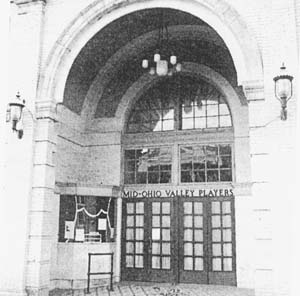

Mid-Ohio Valley Players Theater

Marietta's Mid-Ohio Valley Players Theater is haunted by the ghost of a man in a brown felt derby. Some call him Mr. Shea, believing him to be a man who once owned a string of vaudville theaters in the area. Others believe he is an old light technician who died in the theater.
Built in 1921, the Mid-Ohio Valley Players is the oldest continually operating theater in Marietta. It's located at 229 Putnam Street.
Back